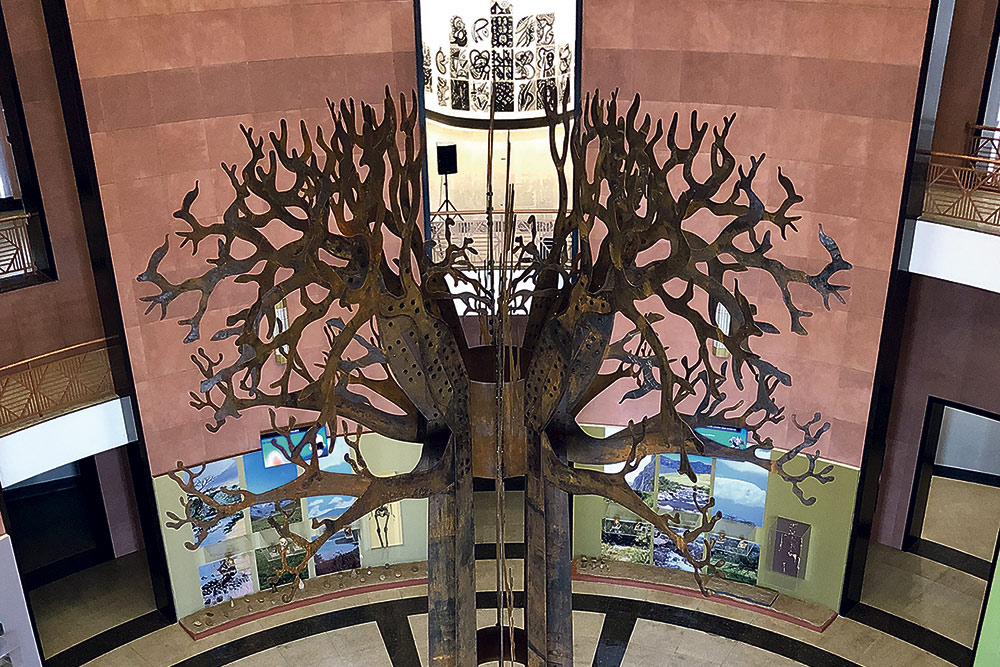

Le Musée des Civilisations Noires
MCN est un musée situé à Dakar, au Sénégal, qui met en valeur l'héritage culturel et historique des civilisations africaines et de la diaspora noire. Son histoire remonte à plusieurs décennies et est étroitement liée à l'évolution politique, culturelle et sociale du Sénégal et du continent africain dans son ensemble.
L'histoire du Musée
L'idée d'un musée célébrant les réalisations et les contributions des civilisations noires remonte aux premières années de l'indépendance du Sénégal en 1960. Cette idée a été soutenue par de nombreux intellectuels, artistes et leaders culturels qui cherchaient à promouvoir une vision positive de l'histoire et de la culture africaines, souvent mal représentées ou sous-représentées dans les récits historiques dominants.
Le projet du Musée des Civilisations Noires a pris de l'ampleur au fil des décennies, avec des discussions et des efforts visant à concrétiser cette vision. En 2010, le président sénégalais Abdoulaye Wade a annoncé officiellement la création du musée lors du Forum mondial sur les réparations à la traite négrière et à l'esclavage, qui s'est tenu à Dakar.
La construction du musée a commencé en 2013 et a été réalisée grâce à la coopération entre le gouvernement sénégalais et l'UNESCO. L'architecte sénégalais Pierre Goudiaby Atepa a conçu le bâtiment emblématique du musée, qui se distingue par son design moderne et sa symbolique profonde.
Le Musée des Civilisations Noires a été officiellement inauguré le 6 décembre 2018 par le président sénégalais Macky Sall, en présence de nombreux dignitaires et personnalités internationales. Depuis son ouverture, le musée est devenu un lieu majeur pour la préservation, la recherche et la promotion de l'héritage culturel africain et de la diaspora noire.
Les collections du musée couvrent une large gamme de thèmes, notamment l'art, l'histoire, l'archéologie, l'anthropologie et les traditions culturelles. Elles mettent en lumière les réalisations et les contributions des civilisations africaines à travers les âges, offrant aux visiteurs une perspective enrichissante sur la diversité et la richesse de l'histoire humaine en Afrique et dans la diaspora noire.
Le Musée des Civilisations Noires joue un rôle crucial dans la promotion du dialogue interculturel, de la compréhension mutuelle et de la reconnaissance de l'importance des civilisations africaines dans le patrimoine mondial. Il contribue également à renforcer le sentiment de fierté et d'identité chez les Africains et les descendants de la diaspora noire, en mettant en valeur leurs héritages culturels et historiques souvent méconnus ou mal compris.
Les exposition du Musée
Le Musée des Civilisations Noires (MCN) propose divers types d'expositions qui mettent en valeur l'héritage culturel et historique des civilisations africaines et de la diaspora noire. Voici quelques exemples des types d'expositions que l'on peut trouver dans ce musée :
Expositions permanentes :
Ces expositions sont souvent divisées en sections thématiques ou chronologiques qui présentent de manière exhaustive différents aspects de l'histoire, de la culture, de l'art et des réalisations des civilisations noires à travers les âges. Elles peuvent inclure des artefacts archéologiques, des œuvres d'art, des textiles, des documents historiques et d'autres éléments pour illustrer la diversité et la richesse des civilisations africaines.
Expositions temporaires :
Le musée organise régulièrement des expositions temporaires qui mettent en lumière des sujets spécifiques, des artistes contemporains, des événements historiques ou des thématiques pertinentes pour l'histoire et la culture africaines. Ces expositions temporaires permettent d'explorer des aspects plus spécifiques ou actuels de l'héritage culturel africain et de favoriser le dialogue et la créativité.
Expositions d'art contemporain :
Le MCN peut également accueillir des expositions d'art contemporain mettant en vedette des artistes africains et de la diaspora noire qui explorent des questions sociales, politiques, culturelles et identitaires à travers leur travail artistique. Ces expositions offrent une perspective contemporaine et dynamique sur les réalités et les défis auxquels font face les communautés africaines et noires dans le monde d'aujourd'hui.
Expositions interactives :
Certaines parties du musée peuvent proposer des expositions interactives qui utilisent la technologie moderne pour engager les visiteurs d'une manière ludique et éducative. Cela peut inclure des installations multimédias, des projections vidéo, des présentations audio et d'autres éléments interactifs qui enrichissent l'expérience muséale et encouragent la participation active des visiteurs.
Expositions éducatives et événements spéciaux :
Le MCN peut organiser des expositions spéciales à des fins éducatives, telles que des programmes éducatifs pour les écoles, des conférences, des ateliers et des événements culturels qui complètent les expositions permanentes et temporaires en offrant des opportunités d'apprentissage et d'échange pour différents publics.
Ces différents types d'expositions contribuent à faire du Musée des Civilisations Noires un lieu dynamique et enrichissant, favorisant la compréhension, la célébration et la préservation du patrimoine culturel et historique des civilisations africaines et de la diaspora noire.